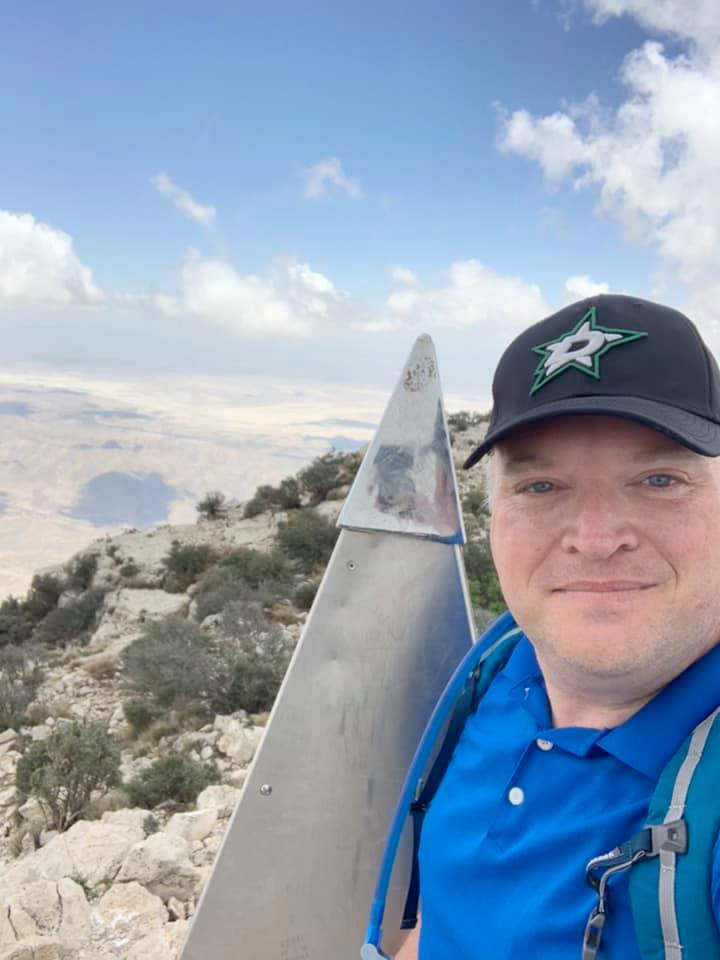
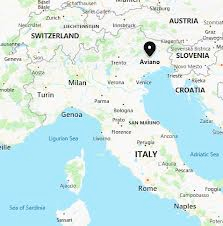

Steven Rushing
About Me

My name is Steven Rushing and I am a telecommunications specialist. I am from Texas but I live in Aviano, Italy. I enjoy playing pickleball, padel, and my euphonium. I have been married 24 years and have 4 children from age 20 to 8.
Italy

I live in Aviano, Italy. It is in the province of Pordenone and is close to Venice. It is in the region of Friuli-Venezia Giulia